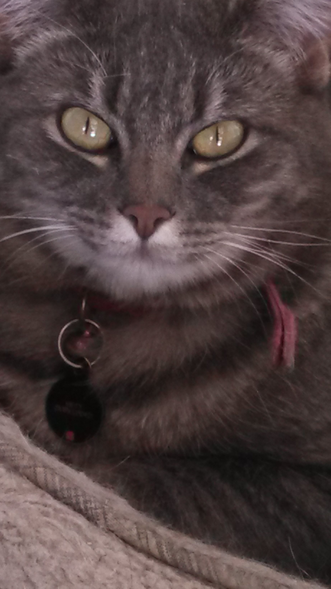
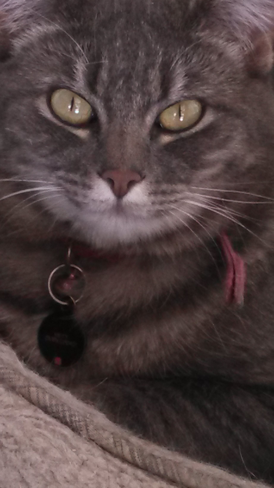

She's (supposedly) an american shorthair cat (though we suspect munchkin and ragdoll) with thick and stripe-y grey fur and green eyes. She's from Richland, WA and has lived with her adopted family there for 4 years. Misty is a cuddly kitty and very friendly to people, although skittish around strangers, but at all costs avoids other animals (especially Cooper). She is an obtusly shaped cat and has big paws. Misty mostly just begs for milk and sleeps in everyone's bed all the day long. She also likes catnip. A lot.
Unfortunately, Misty has done no major acting work despite her talents.
Misty spends an average of 3 hours a day grooming herself.
She surprisingly sheds less than Cooper.
Misty's fur is so thick, you can hide a #2 pencil in it. (As shown in the upperleft of picture 4. That yellow is indeed a pencil.)
One time she shed a whisker.
She is the only cat known to mankind to have kept the very same collar on since it was put on her as a kitten.
Misty "chirps" back at the birds.
Watch a whole 3 minutes of Misty purring:
Watch a video of Misty in the bathtub: